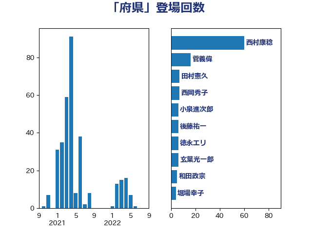

単語「府県」

| 西村康稔 | 自由民主党 | 60 回 |
| 菅義偉 | 自由民主党 | 16 回 |
| 田村憲久 | 自由民主党 | 7 回 |
| 西岡秀子 | 国民民主党 | 7 回 |
| 小泉進次郎 | 自由民主党 | 6 回 |
| 後藤祐一 | 立憲民主党 | 6 回 |
| 徳永エリ | 立憲民主党 | 6 回 |
| 玄葉光一郎 | 立憲民主党 | 6 回 |
| 和田政宗 | 自由民主党 | 5 回 |
| 堀場幸子 | 日本維新の会 | 4 回 |
| 宮本徹 | 日本共産党 | 4 回 |
| 東徹 | 日本維新の会 | 4 回 |
| 稲津久 | 公明党 | 4 回 |
| 美延映夫 | 日本維新の会 | 4 回 |
| 吉川元 | 立憲民主党 | 3 回 |
| 山本博司 | 公明党 | 3 回 |
| 森山浩行 | 立憲民主党 | 3 回 |
| 牧原秀樹 | 自由民主党 | 3 回 |
| 三木亨 | 自由民主党 | 2 回 |
| 加田裕之 | 自由民主党 | 2 回 |
| 務台俊介 | 自由民主党 | 2 回 |
| 安江伸夫 | 公明党 | 2 回 |
| 宮内秀樹 | 自由民主党 | 2 回 |
| 斉藤鉄夫 | 公明党 | 2 回 |
| 森本真治 | 立憲民主党 | 2 回 |
| 清水貴之 | 日本維新の会 | 2 回 |
| 渡辺猛之 | 自由民主党 | 2 回 |
| 田中英之 | 自由民主党 | 2 回 |
| 田村智子 | 日本共産党 | 2 回 |
| 石川博崇 | 公明党 | 2 回 |
| 萩生田光一 | 自由民主党 | 2 回 |
| 蓮舫 | 立憲民主党 | 2 回 |
| 赤澤亮正 | 自由民主党 | 2 回 |
| 高村正大 | 自由民主党 | 2 回 |
| 高橋光男 | 公明党 | 2 回 |
| 高橋千鶴子 | 日本共産党 | 2 回 |
| 上田英俊 | 自由民主党 | 1 回 |
| 中司宏 | 日本維新の会 | 1 回 |
| 佐藤英道 | 公明党 | 1 回 |
| 古屋範子 | 公明党 | 1 回 |
| 古賀之士 | 立憲民主党 | 1 回 |
| 堂故茂 | 自由民主党 | 1 回 |
| 塩川鉄也 | 日本共産党 | 1 回 |
| 山下雄平 | 自由民主党 | 1 回 |
| 山口那津男 | 公明党 | 1 回 |
| 島村大 | 自由民主党 | 1 回 |
| 平木大作 | 公明党 | 1 回 |
| 後藤茂之 | 自由民主党 | 1 回 |
| 斎藤嘉隆 | 立憲民主党 | 1 回 |
| 有村治子 | 自由民主党 | 1 回 |
| 朝日健太郎 | 自由民主党 | 1 回 |
| 杉久武 | 公明党 | 1 回 |
| 杉尾秀哉 | 立憲民主党 | 1 回 |
| 枝野幸男 | 立憲民主党 | 1 回 |
| 柚木道義 | 立憲民主党 | 1 回 |
| 熊野正士 | 公明党 | 1 回 |
| 片山大介 | 日本維新の会 | 1 回 |
| 田名部匡代 | 立憲民主党 | 1 回 |
| 田村まみ | 国民民主党 | 1 回 |
| 白石洋一 | 立憲民主党 | 1 回 |
| 石井正弘 | 自由民主党 | 1 回 |
| 石垣のりこ | 立憲民主党 | 1 回 |
| 自見はなこ | 自由民主党 | 1 回 |
| 落合貴之 | 立憲民主党 | 1 回 |
| 西田実仁 | 公明党 | 1 回 |
| 赤羽一嘉 | 公明党 | 1 回 |
| 足立康史 | 日本維新の会 | 1 回 |
| 青山繁晴 | 自由民主党 | 1 回 |
| 青木愛 | 立憲民主党 | 1 回 |
| 高良鉄美 | 無所属 | 1 回 |